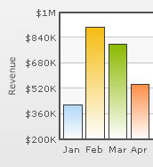

Chart limits are the minimum & maximum y-axis values. FusionCharts XT automatically calculates the best chart limits when you don't specify them explicitly.
In FusionCharts XT, the axis limits encompasses all values present in the chart i.e., no data value can be below the minimum y-axis value or above maximum y-axis value - they have to be within the axis range. Even if you force an axis limit that is lower/higher than this, FusionCharts XT will automatically adjust it.

The XML/JSON code going into the above is:
<chart caption='Monthly Revenue' xAxisName='Month' yAxisName='Revenue' numberPrefix='$' showValues='0'>
<set label='Jan' value='420000' />
<set label='Feb' value='910000' />
<set label='Mar' value='720000' />
<set label='Apr' value='550000' />
....
</chart>{
"chart":{
"caption":"Monthly Revenue",
"xaxisname":"Month",
"yaxisname":"Revenue",
"numberprefix":"$",
"showvalues":"0"
},
"data":[{
"label":"Jan",
"value":"420000"
},
{
"label":"Feb",
"value":"910000"
},
{
"label":"Mar",
"value":"720000"
},
{
"label":"Apr",
"value":"550000"
}
...
]
}
Note that the chart limits have not been defined.
You can set the chart limits explicitly using the yAxisMaxValue and yAxisMinValue attributes.
<chart yAxisMinValue='0' yAxisMaxValue='100' ...>
For scatter chart and bubble chart, you can also set X Axis limits using xAxisMinValue and xAxisMaxValue attributes.
You can set whether the y-axis lower limit will be 0 (in case of all positive values on chart) or should the y-axis lower limit will adapt itself to a different figure based on values provided to the chart.
<chart caption='Monthly Revenue' xAxisName='Month' yAxisName='Revenue' numberPrefix='$' showValues='0' setAdaptiveYMin='1' >
<set label='Jan' value='420000' />
<set label='Feb' value='910000' />
<set label='Mar' value='720000' />
<set label='Apr' value='550000' />
....
</chart>{
"chart":{
"caption":"Monthly Revenue",
"xaxisname":"Month",
"yaxisname":"Revenue",
"numberprefix":"$",
"showvalues":"0",
"setAdaptiveYMin":"1"
},
"data":[{
"label":"Jan",
"value":"420000"
},
{
"label":"Feb",
"value":"910000"
},
{
"label":"Mar",
"value":"720000"
},
{
"label":"Apr",
"value":"550000"
}
...
]
}Note the change in the y-axis minimum value now:
For scatter chart and bubble chart, you can also set chart to calculate an adaptive minimum value for X Axis. You can achieve this by setting setAdaptiveXMin='1'
For charts that support dual Y Axis, you need to set axis limits for each axis as under:
<chart PYAxisMinValue='0' PYAxisMaxValue='100' SYAxisMinValue='10' SYAxisMaxValue='20' ..>
Here, PYAxisMinValue and PYAxisMaxValue refer to y-axis min value and max value of primary axis. SYAxisMinValue and SYAxisMaxValue refer to y-axis min and max value of secondary axis.
If you want both the axis of a dual y-axis chart to have same limits, you can set :
<chart syncAxisLimits='1' ..>
The Zoom Line chart supports dynamic axis i.e., the axis reflects limits that are pertinent to current view of zoom (if data has been zoomed in). So if the data items that are currently visible in zoomed mode range from 10-92, the axis will have limits of 0-100. However, if upon scrolling/zooming out, the data range changes from 18-991, then the axis will automatically be changed from 0-100. By default, dynamic axis is not enabled. To enable it, you need to set the following:
<chart dynamicAxis='1' ..>
This applies to both linear and log axis of Zoom Line Chart.
You can always hide the limit values of a chart. To hide the limits you need to set the following:
<chart showLimits='0' ..>
For scatter chart and bubble chart, you can also hide the limit values of X Axis setting showVLimits='0'